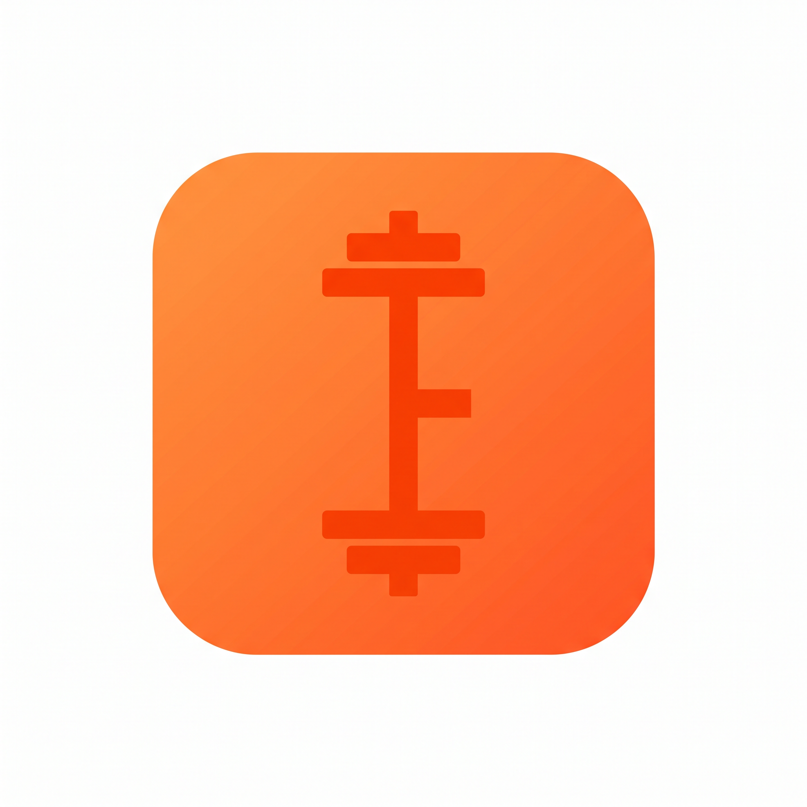
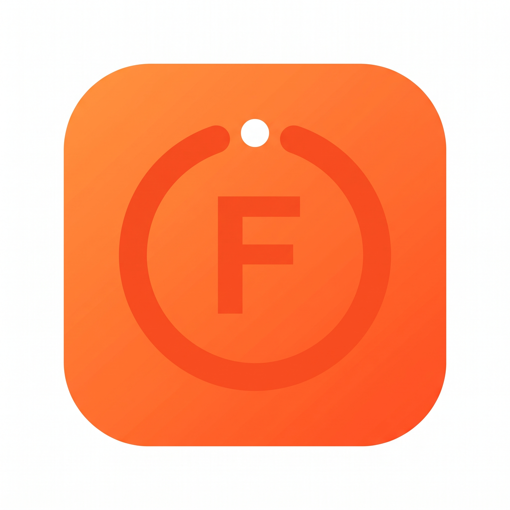
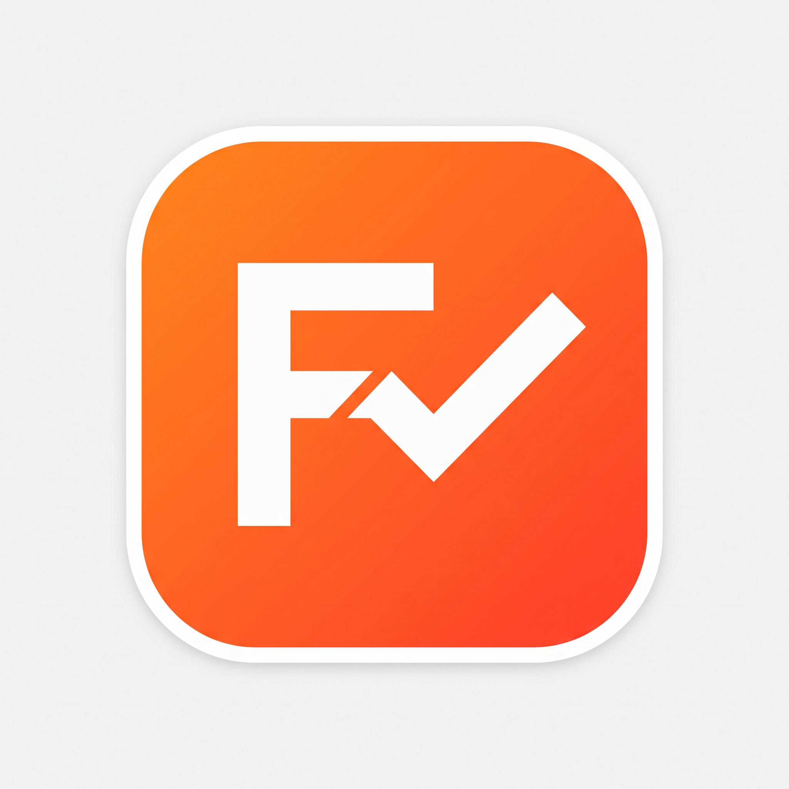
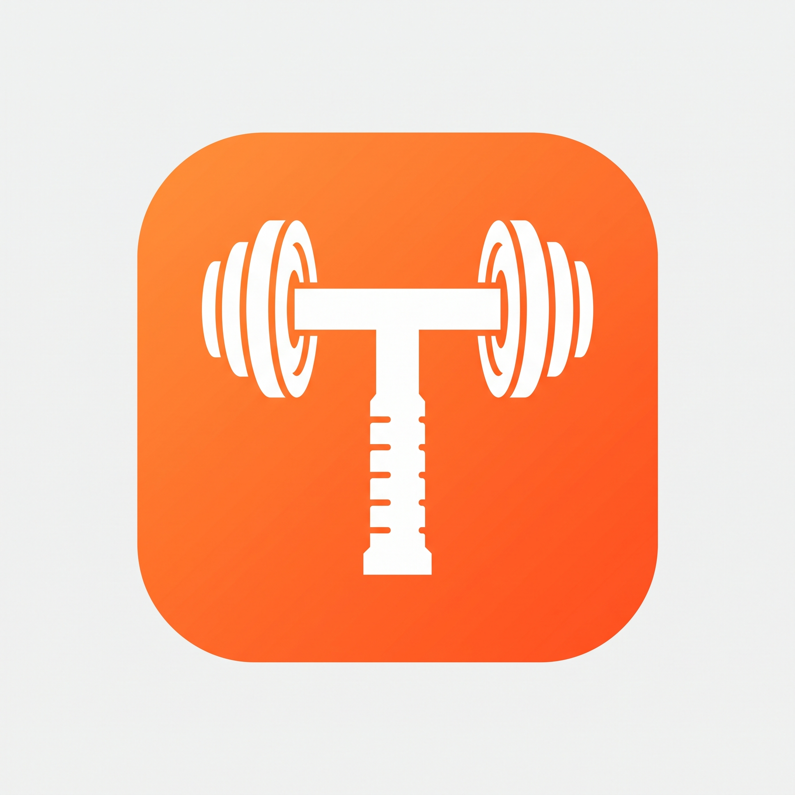

字母图形化极简方案 · 基于 docs/logo_design/index.html

字母 F 的竖线 = 杠铃杆，横线 = 杠铃片。F 本身就是一根杠铃的抽象形态。
最简洁推荐
追踪圆环（带缺口的圆）+ 内嵌 F 字母。圆环顶部的缺口处有一个小圆点，象征"追踪进行中"。
最现代几何
左半部分是 F 字母，从 F 的中横起笔延伸出一道对勾（✓）。F = 品牌，对勾 = 记录完成。
完成打卡感
字母 T 本身就是一根哑铃的形态。横线 = 哑铃杆+两侧配重，竖线 = 哑铃握把。
极简大牌核心思路：纯粹围绕英文名 FitTrack 做减法设计 —— 字母图形化 + 力量元素，追求简洁、现代、大牌感。
名称拆解：
设计规范：
生成工具：scripts/gen_image.py (RouteAll/Vidu q3-fast)